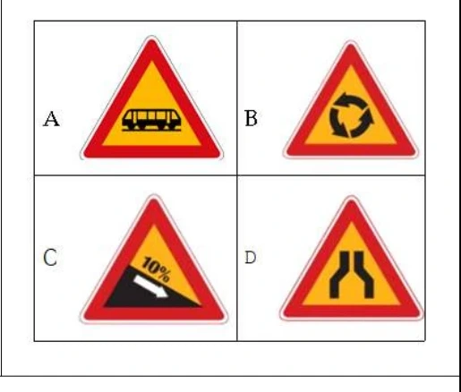

908. Дараах аюулгүй байдлын тэмдгийг суурилуулах газрын талаарх шалгуураас буруу нь аль вэ?

- ①A тэмдгийг трамвайн уулзвараас өмнөх 50–120 метрийн хооронд, замын төв хэсэг эсвэл баруун талд байрлуулна.
- ②B тэмдгийг тойрог уулзвараас өмнөх 30–120 метрийн баруун талд байрлуулна.
- ③C тэмдгийг огцом уруудах налуу эхлэх цэгээс өмнөх 30–200 метрийн баруун талд байрлуулна.
- ④D тэмдгийг замын өргөн нарийсах цэгээс өмнөх 30–200 метрийн баруун талд байрлуулна.
Хариулт харах
Зөв хариулт
④ D тэмдгийг замын өргөн нарийсах цэгээс өмнөх 30–200 метрийн баруун талд байрлуулна.
Үндэслэл
A. Трамвай анхааруулах тэмдэг 110-2: трамвайн огтлолцлоос 50–120 метрийн өмнө замын төв эсвэл баруун талд. B. Тойрог уулзварын тэмдэг 109: уулзвараас 30–120 метрийн өмнө баруун талд. C. Уруудах налуугийн тэмдэг 117: налуу эхлэхээс 30–200 метрийн өмнө баруун талд. D. Зам нарийсах тэмдэг 118: нарийсах цэгээс 50–200 метрийн өмнө баруун талд.
Үндэслэлийн текст нь машин орчуулга.